Control alignment in a Responsive Table of Abstract layout is based on setting the column Width and Offset, as well as the Label Width property, when the control is an input control displayed with its label. Let's see the approach using an example, and identifying the similarities between the design of the form with the HTML Editor and with the Abstract Editor. Consider a web transaction where the default (HTML and Abstract) form is as follows, and we want to reorganize the controls in the form so as to use the screen space better.
So, we want to have the following at runtime: 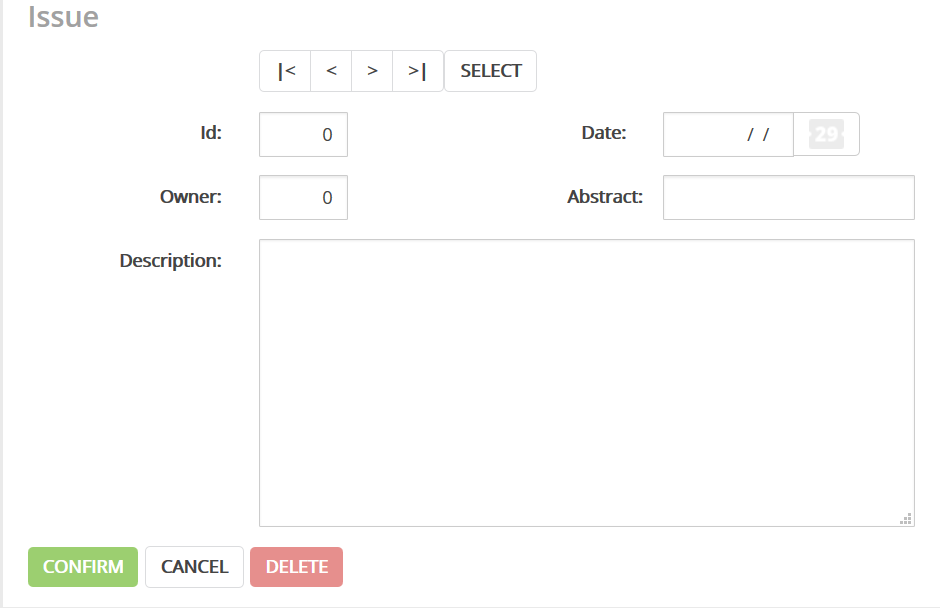 Using the HTML EditorLet's start by seeing how we would do it using the HTML Editor. 1. First, select the cell holding the "Id" attribute, and click on the split cell option of the contextual menu. 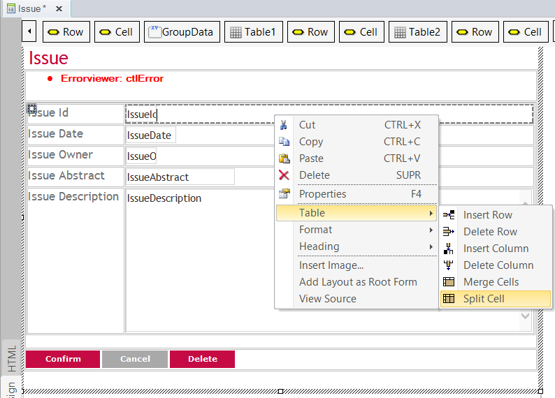 2. Drag a table with one row and two columns to the split cell. 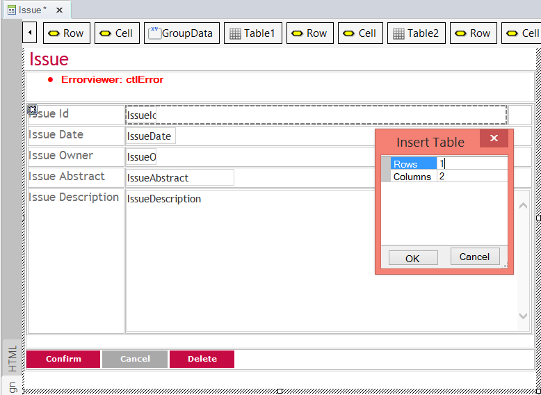 Next, insert the "Date" label and the "IssueDate" attribute to each column of the table previously created. Delete the unused row. 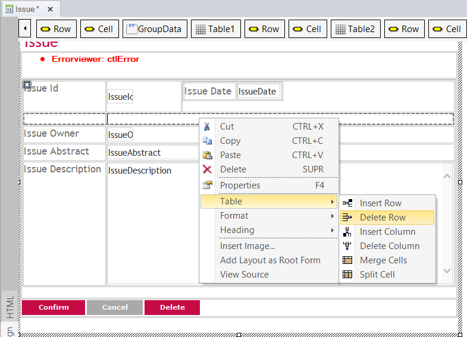 3. Do the same with the other controls ("Issue Abstract" attribute and its label). 4. Check that the column holding the "Issue Id" and "Issue Owner" attributes has a fixed width. 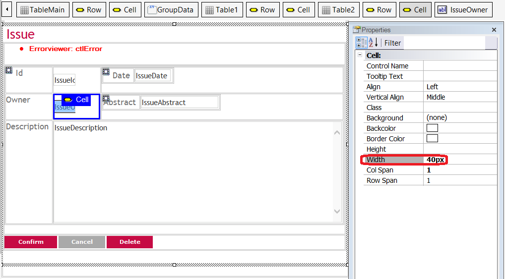 Accordingly, we'll configure a fixed width for the other columns. 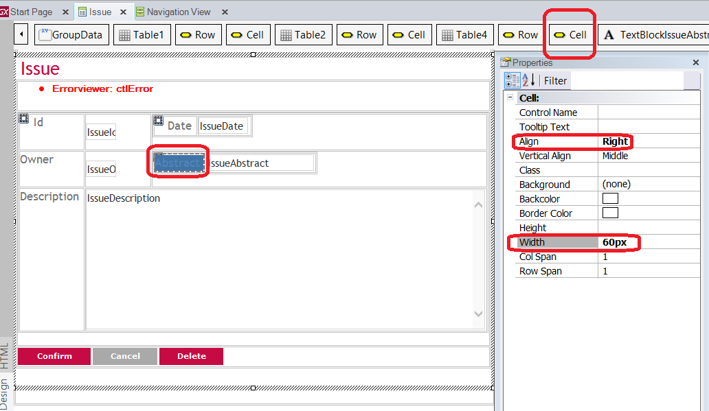 Note that the cell holding the labels has the Align property to Right. Using the Abstract LayoutNow, let's see how to create a form similar to the previous one, but for a Responsive Web Design (RWD). Remember that the transaction form looks as follows (the Form Preview is very helpful in this case to anticipate how it will look at runtime). You can open the Preview through the "View" > "Other Tools Windows" > "Form Preview" menu options. 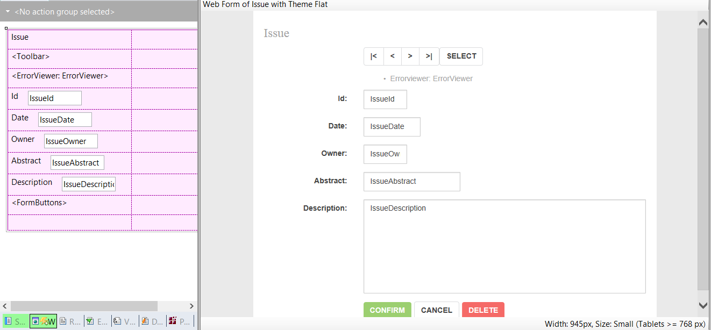 Let's assume that we want to change the default layout for small and wider screens, following the same design as the one shown above in this document. For extra small screens, we'll keep the default design definitions: 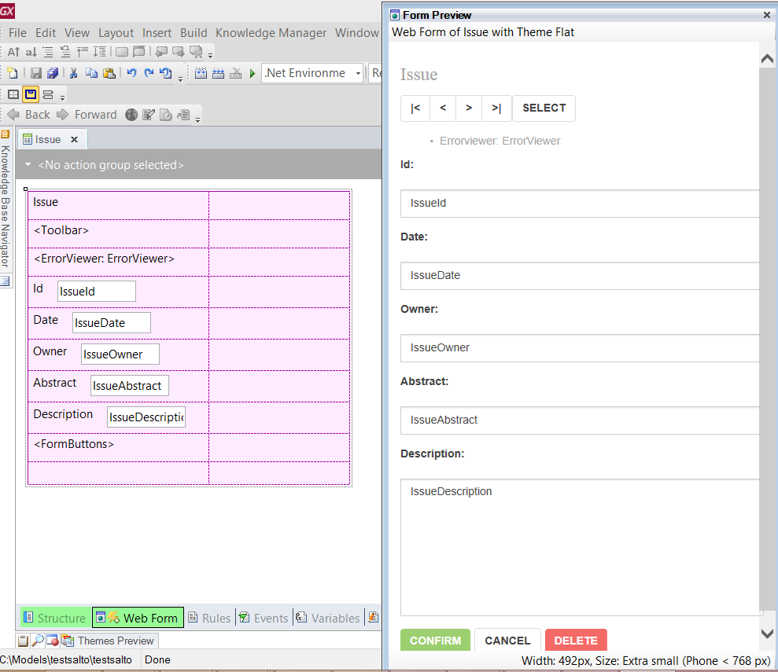 So, to get the same results at runtime for small and wider screens as in the previous example, the steps should be as follows: 1. First, drag the "Date" label and the "IssueDate" attribute to the column above, to the right of the "IssueId" attribute. 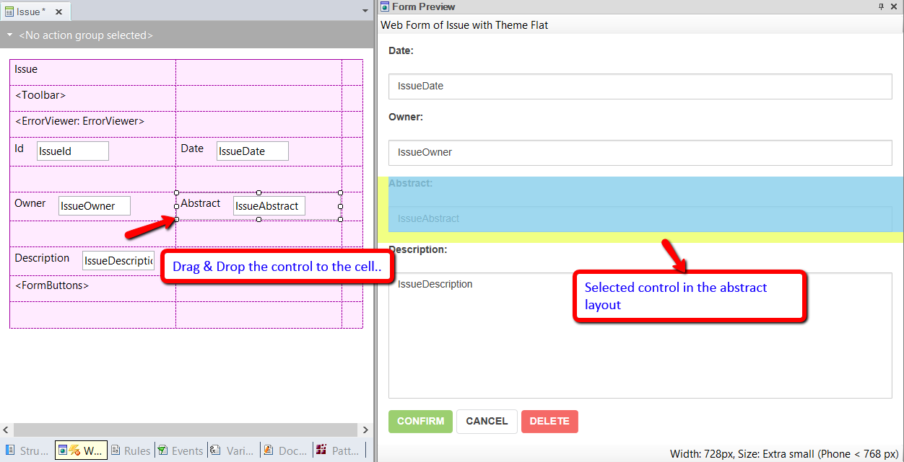 Do the same with the "IssueAbstract" control, and drag it to the column to the right of the "IssueOwner" control. Note that the selected control in the Abstract layout is marked in the Form Preview. 3. Remove the unused rows. 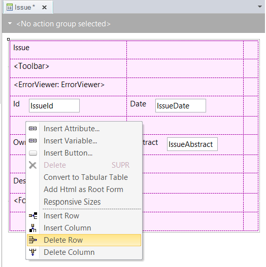 In RWD, cell width should never be set with fixed values; that's why we're changing the cell width definition to percentages. There's a percentage domain defined by the Bootstrap framework. Another requirement for this design is that all the labels should be vertically aligned. 4. Right-click on the outer-most responsive table and click on the Responsive Sizes option. The Responsive Sizes dialog will open. 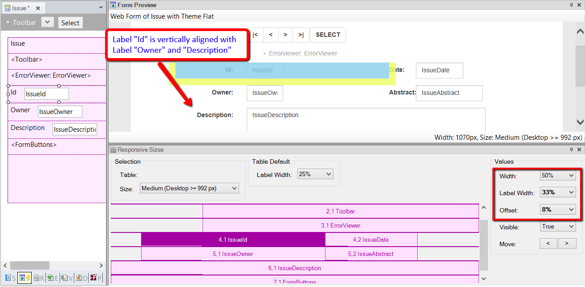 Note that the selected cell in the Responsive Sizes dialog is marked in the Form Preview. The Preview shows the changes at the same time that they are performed in the Responsive Sizes dialog. The alignment of the columns is obtained through the width, offset, and label width properties. 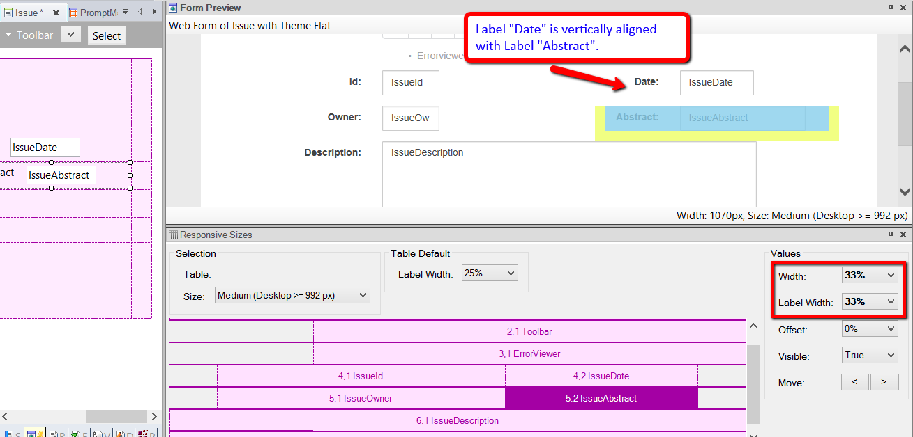 Note that sometimes the vertical alignment of labels is not possible if the label and the control go together. In this case, you can use a separate cell for the label and another for the control (Label Property of the control = "none"). See AlsoGetting started with RWD: Understanding default forms |
| Backlinks |
| Toc:Responsive Web Design in GeneXus |